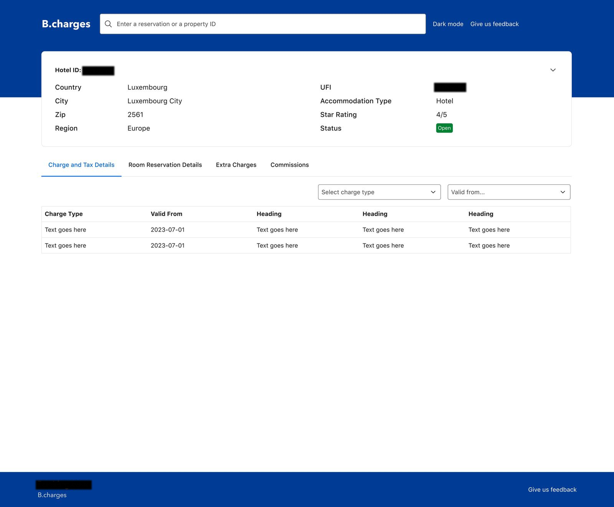
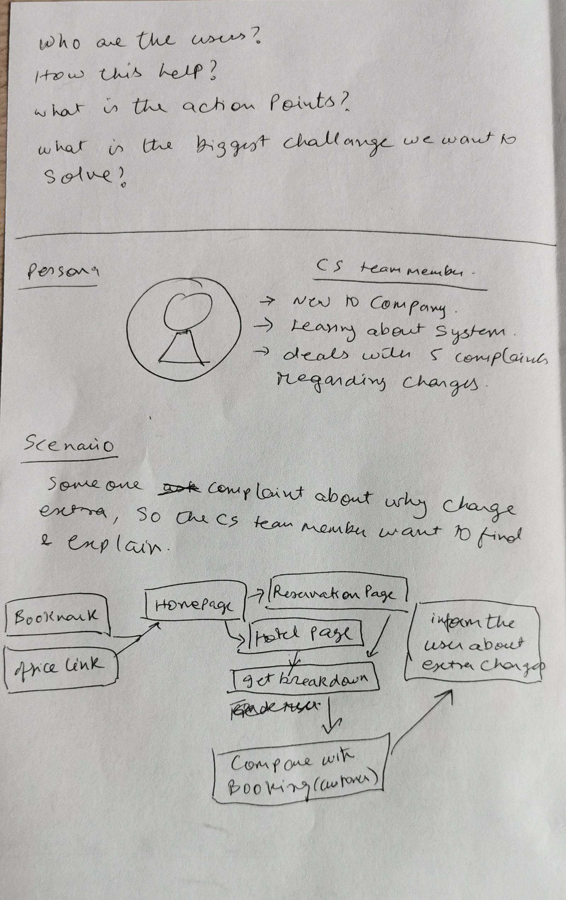
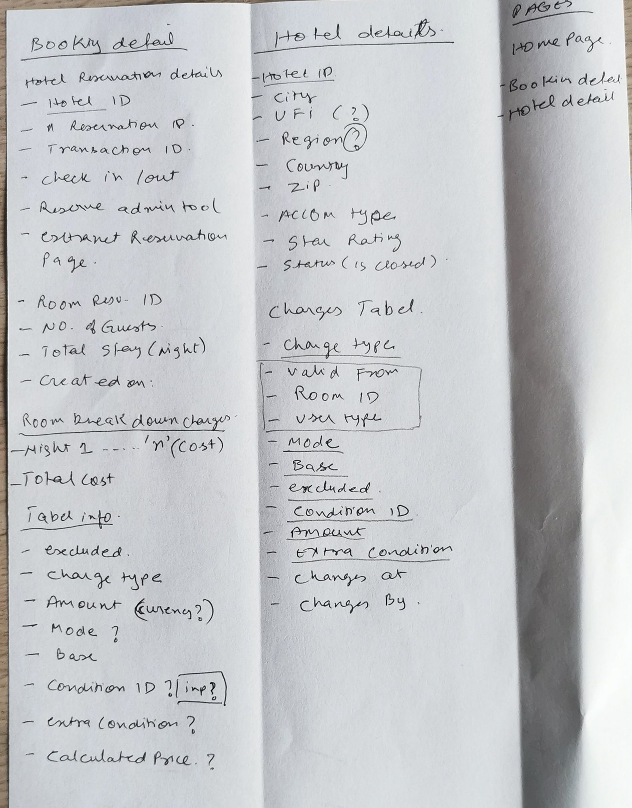
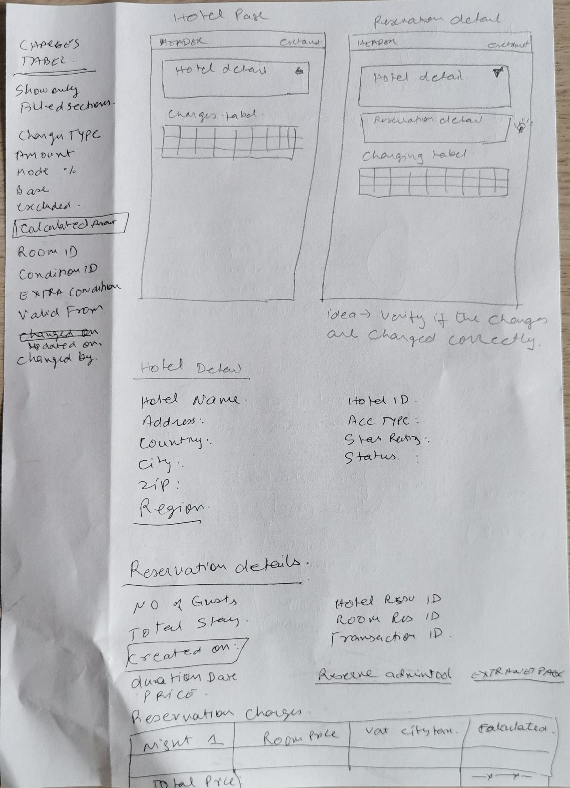
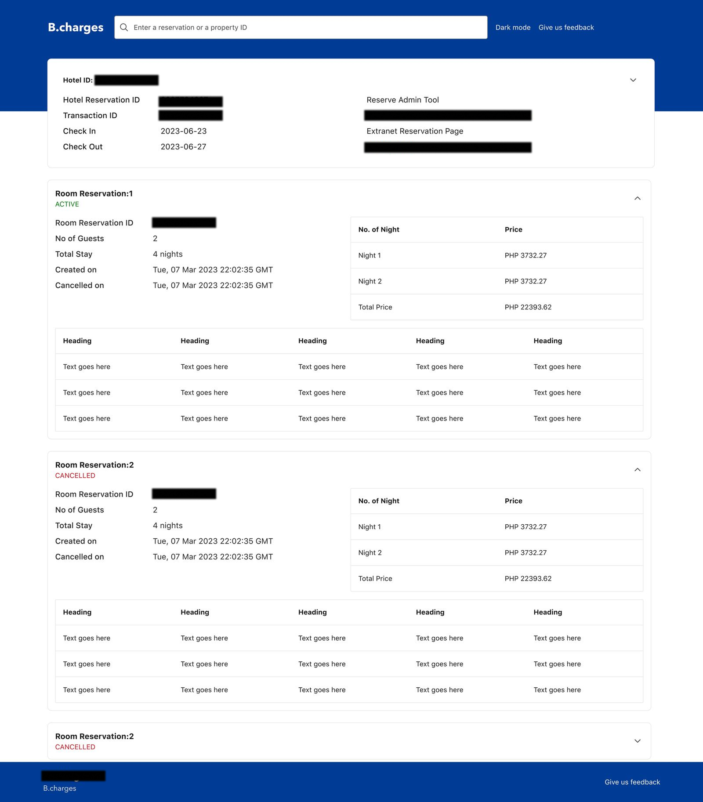
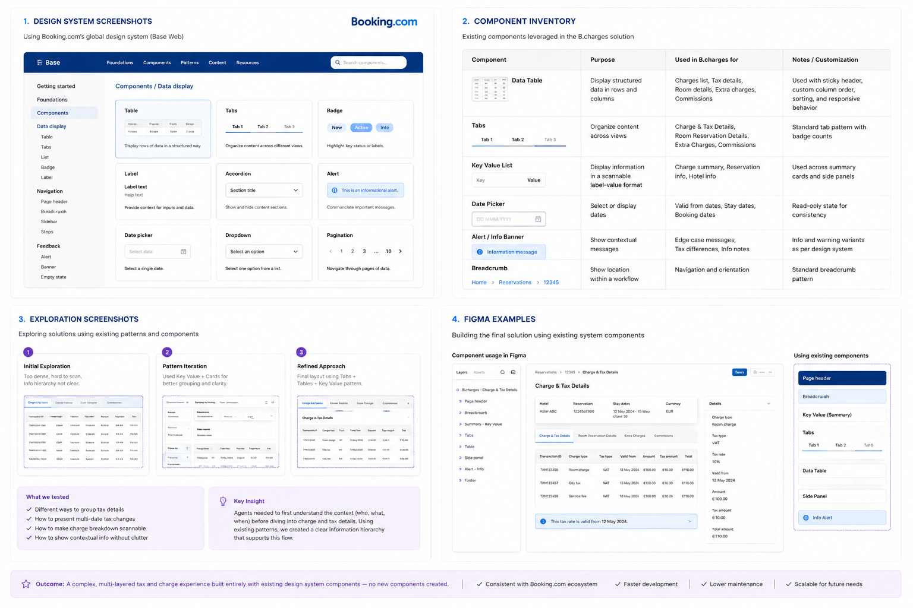

B.charges: Making Hidden Tax Logic Visible
Designed a tool that turned an unexplainable billing problem into a traceable, single-screen answer, cutting escalated charge disputes and giving Customer Service a source of truth that didn't exist before.

Strategic Context
Senior Product Designer, led design end-to-end with PM, Engineer, & Data partner
Internal Customer Service tool, informing partner-facing charge clarity
CS agents resolving billing disputes, often new to the company
City tax rates changed without warning; invoices and website prices didn't match
The Messy Problem
City and local tax rates changed, sometimes with little warning. When they did, the price a guest saw on the website at booking time didn't always match what showed up on their final invoice. Guests didn't understand why. Customer Service couldn't explain it clearly either, because the information that would have answered the question wasn't surfaced anywhere usable.
What This Looked Like Day to Day
- • No single source of truth: charge breakdowns existed in the system but weren't structured for anyone to explain quickly
- • Fragmented path: an agent had to move across homepage, reservation page, and hotel page just to start piecing together one charge
- • No timing logic visible: a guest booking before a tax change and being invoiced after looked like an error, not a policy
- • Recurring support load: "extra charge" disputes were a steady, repeat category of contact
This wasn't a missing feature. It was a missing single source of truth charges existed, they just weren't structured for anyone, agent or guest, to understand at a glance.
Discovery: Starting With Questions, Not Screens
Before designing a single screen, I wrote down what I actually needed to know. Who are the users? How does this help them? What are the action points? What's the biggest challenge we're trying to solve? Those four questions shaped everything that followed.

The Persona
A Customer Service team member, new to the company, still learning the system, currently handling five complaints about charges.
The Scenario
A guest complains about an unexpected charge. The agent needs to find the breakdown, understand it themselves, and explain it clearly, without escalating or guessing.
Mapping the Real Flow
Once I mapped the actual path an agent had to follow, the problem became obvious. To explain one extra charge, an agent might move through a homepage, a reservation page, and a hotel page, then manually compare numbers against what Booking.com's own backend said, with no single place pulling it together.
Bookmark / Office Link
Entry point, usually saved or shared internally
Homepage → Reservation Page / Hotel Page
Two disconnected paths depending on what the agent knew first
Get Breakdown
The step that didn't really exist as a designed feature agents pieced it together themselves
Compare With Booking.com Records → Inform Guest
The moment that mattered most, and the one with the least support
The reframe: this wasn't a missing feature, it was a missing single source of truth. The fix wasn't bolting something onto the existing flow, it was building the thing that should have connected all of it from the start.
Defining the Data Model
This is the part of the work most case studies skip, but it's where most of the real thinking happened. Before any screen could be designed, I went through hotel details, reservation details, and the charges table line by line with engineering, because the entire UI depends on this structure being right.

The Structural Decision That Mattered Most
Charges needed to be traceable to three things at once: the hotel, the specific reservation, and the time window the charge was valid for. Tax rates aren't static, a charge correct in March might not be correct in July. The data model had to carry that "valid from" logic, or the UI built on top of it would always be subtly wrong.
From Wireframe to Shipped Product
Two core pages, Hotel Page and Reservation Detail, each surfacing a header, the hotel or reservation context, and a charges table directly beneath it. The idea written directly on the sketch said everything: "verify if the charges are charged correctly."

What Shipped

A clean header shows Hotel ID, country, city, region, accommodation type, and status, answering "where am I" instantly. Tabbed navigation, Charge and Tax Details, Room Reservation Details, Extra Charges, Commissions, lets an agent move between exactly the views they need. Every charge ties back to a real Transaction ID, a real Reservation ID, and real per-night pricing. An agent isn't looking at an abstraction, they're looking at the exact numbers tied to the exact guest in front of them.
Elevating the Experience Within a Rigid Design System
The challenge wasn't creating new UI. The challenge was solving a completely new workflow while staying within Booking.com's established design system and ensuring consistency across the wider ecosystem.

The Constraint
Booking.com's design system supports hundreds of products and teams. Creating new components would increase implementation effort, maintenance costs, and design debt.
Design System Collaboration
I worked closely with the Design System team to review existing components, table patterns, navigation structures, and interaction models to understand how they could support this new use case.
Design Decision
Instead of introducing new UI patterns, I combined existing components in a new way to make complex charge and tax information easier to understand without disrupting established workflows.
Outcome
The final solution felt native to Booking.com, accelerated delivery, reduced implementation risk, and maintained consistency across the broader ecosystem.
Key takeaway: Senior design isn't always about creating something new. In this case, the value came from understanding the system deeply enough to solve a new problem using patterns users already trusted.
The Edge Case That Drove Everything
The core problem was never really a UI problem, it was a timing problem. A guest sees a price on the website at one moment. Their invoice gets generated at another moment, sometimes after a local tax rate change has already taken effect. Same booking, two different numbers, and until this shipped, no visible explanation for either the guest or the agent trying to help them.
Before
A rate change looked identical to an error. Agents had no way to distinguish "this is correct, policy changed" from "something is wrong." Most defaulted to escalation.
After
The "Valid From" field made the discrepancy explainable. An agent could point to the exact date a rate changed and explain it, with the guest's own data on screen.
Why this mattered more than it sounds: this turned an "the company overcharged me" conversation into a "tax rates changed on this date, here's exactly what changed" conversation. Same number on the invoice, completely different outcome for trust.
Business Impact & Outcomes
This wasn't a UI problem with a UI solution. It was a trust problem, and the resolution was making complexity legible — not removing it. Tax law can't be simplified. What can change is whether a guest and an agent can both see why a number is what it is.
A note on these numbers: figures above are illustrative, reconstructed to represent the scale and direction of real impact rather than exact reported metrics. What I can say with full confidence: disputes needing escalation dropped noticeably after rollout, and CS agents went from piecing together explanations across disconnected pages to resolving them on one screen.
Strategic Assessment (SWOT)
Strengths
Single source of truth for a previously fragmented problem; grounded in real discovery and a clear persona, not assumptions.
Opportunities
Extend the same "valid from" transparency model directly into the guest-facing invoice, not just the internal CS tool.
Weaknesses
Built as an internal tool first, guest-facing clarity still depends on a CS agent as the intermediary rather than full self-service.
Threats
Tax regulation changes faster than most internal tools get re-validated, this needs an owner, not a one-time fix.